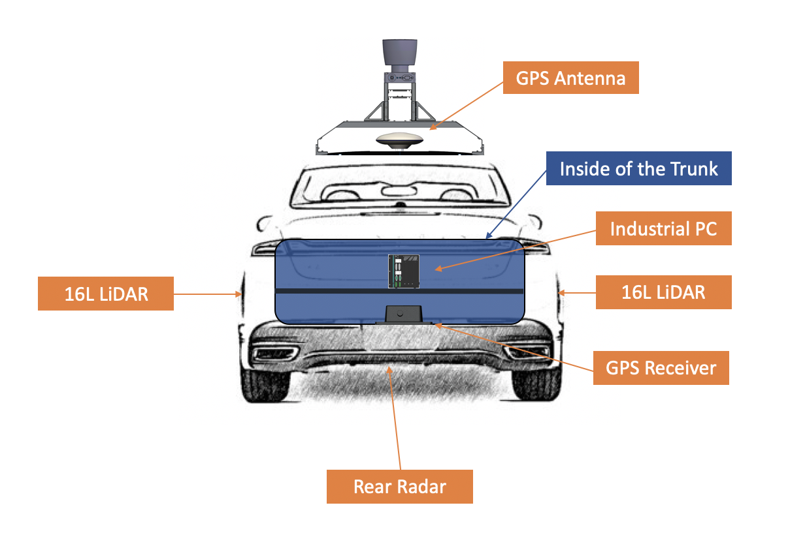

Apollo 3.5 Hardware and System Installation Guide¶
About This Guide¶
The Apollo master Hardware and System Installation Guide provides the instructions to install all of the hardware components and system software for the Apollo Project. The system installation information included pertains to the procedures to download and install the Apollo Linux Kernel.
Document Conventions¶
The following table lists the conventions that are used in this document:
Icon |
Description |
|---|---|
Bold |
Emphasis |
|
Code, typed data |
Italic |
Titles of documents, sections, and headings Terms used |
|
Info Contains information that might be useful. Ignoring the Info icon has no negative consequences. |
|
Tip. Includes helpful hints or a shortcut that might assist you in completing a task. |
|
Online. Provides a link to a particular web site where you can get more information. |
|
Warning. Contains information that must not be ignored or you risk failure when you perform a certain task or step. |

Introduction¶
The Apollo Project is an initiative that provides an open, complete, and reliable software platform for Apollo partners in the automotive and autonomous driving industries. The aim of this project is to enable these entities to develop their own self-driving systems based on the Apollo software stack.
Documentation¶
The following set of documentation describes Apollo 3.0:
[Apollo Hardware and System Installation Guide] ─ Links to the Hardware Development Platform Documentation in Specs
Vehicle:
Controller Area Network (CAN) card
GPS Antenna
GPS Receiver
Apollo Extension Unit (AXU)
Software: Refer to the Software Installation Guide for information on the following:
Ubuntu Linux
Apollo Linux Kernel
NVIDIA GPU Driver
[Apollo Quick Start Guide] ─ The combination of a tutorial and a roadmap that provides the complete set of end-to-end instructions. The Quick Start Guide also provides links to additional documents that describe the conversion of a regular car to an autonomous-driving vehicle.
Key Hardware Components¶
The key hardware components to install include:
Onboard computer system ─ Neousys Nuvo-6108GC (2)
Controller Area Network (CAN) Card ─ ESD CAN-PCIe/402-B4
Global Positioning System (GPS) and Inertial Measurement Unit (IMU) ─ You can select one of the following options:
NovAtel SPAN-IGM-A1
NovAtel SPAN® ProPak6™ and NovAtel IMU-IGM-A1
NovAtel SPAN® PwrPak7™
Navtech NV-GI120
Light Detection and Ranging System (LiDAR) ─ You can select one of the following options, please note Apollo master uses VLS-128 LiDAR:
Velodyne HDL-64E S3
Velodyne Puck series
Innovusion LiDAR
Hesai’s Pandora
Cameras — You can select one of the following options:
Leopard Imaging LI-USB30-AR023ZWDR with USB 3.0 case
Argus Camera (FPD-Link)
Wissen Camera
Radar — You can select one of the following options:
Continental ARS408-21
Racobit B01HC
Additional Components Required¶
You need to provide these additional components for the Additional Tasks Required:
Apollo Sensor Unit (ASU)
Apollo Extension Unit (AXU)
A 4G router for Internet access
A USB hub for extra USB ports
A monitor, keyboard, and mouse for debugging at the car onsite
Cables: a Digital Visual Interface (DVI) cable (optional), a customized cable for GPS-LiDAR time synchronization
Apple iPad Pro: 9.7-inch, Wi-Fi (optional)
The features of the key hardware components are presented in the subsequent sections.
Steps for the Installation Tasks¶
This section describes the steps to install:
The key hardware and software components
The hardware in the vehicle
At the Office¶
Perform the following tasks:
Prepare the IPC:
Install the CAN card
Install or replace the hard drive
Prepare the IPC for powering up
Install the software for the IPC:
Ubuntu Linux
Apollo Kernel
Nvidia GPU Driver
The IPC is now ready to be mounted on the vehicle.
In the Vehicle¶
Perform these tasks:
Make the necessary modifications to the vehicle as specified in the list of prerequisites
Install the major components:
GPS Antenna
IPC
GPS Receiver and IMU
LiDAR
Cameras
Radar
Prerequisites¶
 WARNING: Prior to mounting the major
components (GPS Antenna, IPC, and GPS Receiver) in the vehicle, perform certain
modifications as specified in the list of prerequisites. The instructions for
making the mandatory changes in the list are outside the scope of this document.
WARNING: Prior to mounting the major
components (GPS Antenna, IPC, and GPS Receiver) in the vehicle, perform certain
modifications as specified in the list of prerequisites. The instructions for
making the mandatory changes in the list are outside the scope of this document.
The list of prerequisites are as follows:
The vehicle must be modified for “drive-by-wire” technology by a professional service company. Also, a CAN interface hookup must be provided in the trunk where the IPC will be mounted.
A power panel must be installed in the trunk to provide power to the IPC and the GPS-IMU. The power panel would also service other devices in the vehicle such as a 4G LTE router. The power panel should be hooked up to the power system in the vehicle.
A custom-made rack must be installed to mount the GPS-IMU Antenna, the cameras and the LiDAR’s on top of the vehicle.
A custom-made rack must be installed to mount the GPS-IMU in the trunk.
A custom-made rack must be installed in front of the vehicle to mount the front-facing radar.
A 4G LTE router must be mounted in the trunk to provide Internet access for the IPC. The router must have built-in Wi-Fi access point (AP) capability to connect to other devices, such as an iPad, to interface with the autonomous driving (AD) system. A user would be able to use the mobile device to start AD mode or monitor AD status, for example.
Diagrams of the Major Component Installations¶
The following two diagrams indicate the locations of where the three major components (GPS Antenna, IPC, GPS Receiver and LiDAR) should be installed on the vehicle:


Additional Tasks Required¶
Use the components that you were required to provide to perform the following tasks:
Connect a monitor using the DVI or the HDMI cables and connect the keyboard and mouse to perform debugging tasks at the car onsite.
Establish a Wi-Fi connection on the Apple iPad Pro to access the HMI and control the Apollo ADS that is running on the IPC.
Time Sync Script Setup [Optional]¶
In order to sync the computer time with NTP servers on the internet, you could use the Time Sync script
Next Steps¶
After you complete the hardware installation in the vehicle, see the Apollo Quick Start for the steps to complete the software installation.